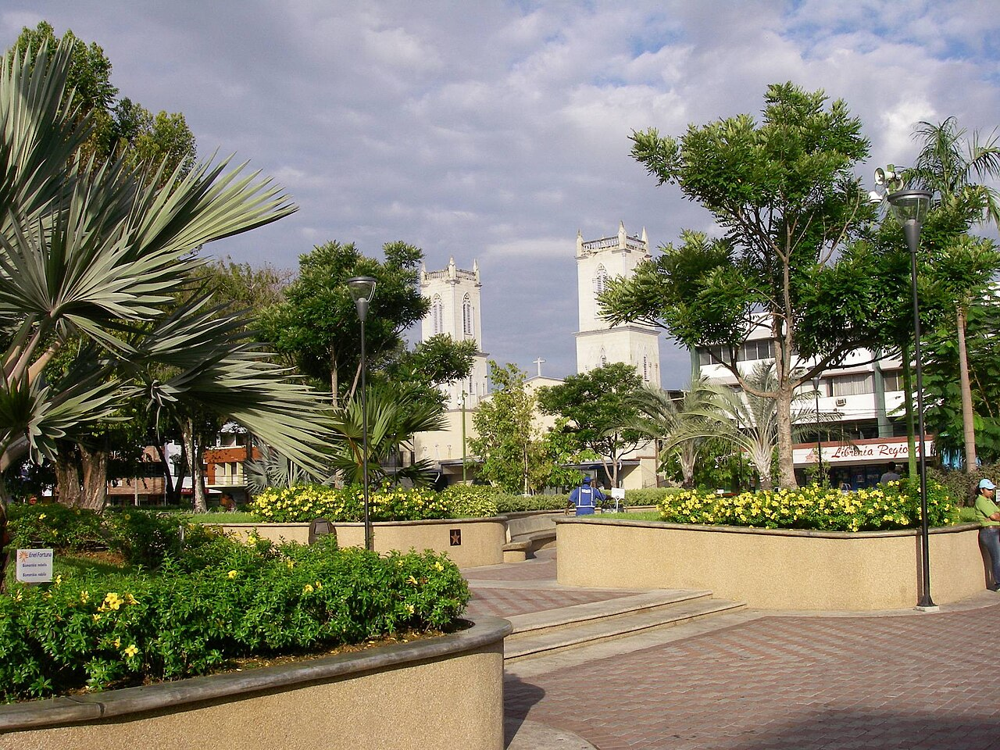

A Complete Guide
Boquete
A mountain town in the highlands of Chiriquí, Panama, at the foot of an 11,401-foot volcano — everything worth knowing before you build a life there.

A backroad through the coffee hills outside Boquete.
A mountain town in the highlands of Chiriquí, Panama, at the foot of an 11,401-foot volcano — everything worth knowing before you build a life there.
A backroad through the coffee hills outside Boquete.
There is a particular kind of morning in Boquete: coffee on a porch, the air cool enough for a light sweater, birdsong instead of traffic, and a volcano at the end of the street. This guide covers everything worth knowing before you decide this is where you build — the land, the climate, the history, the neighborhoods, daily life, what things actually cost, and the legal and financial path from here to keys in hand.
Why the elevation is the whole story.
Boquete sits at 3,300 to 5,900 feet on the shoulders of Volcán Barú, Panama's highest point at 11,401 feet and the only spot in the country where, on a clear day, you can see both the Pacific and the Caribbean at once. The elevation buys the valley a permanent spring: cool mornings, warm afternoons, average lows near 60°F and highs near 80°F, with none of the tropical swelter that defines the rest of the country.

Volcán Barú, seen up close through cloud. Coffee is grown on its slopes between 1,500 and 1,700 meters, where a wide day-to-night temperature swing is exactly what gives the coffee its flavor.
The valley's volcanic ash soil is rich in minerals, and the same conditions that make the coffee legendary make the whole landscape lush: flower plantations, dense forest, rivers running down from the peak, and a climate mild enough that most homes need neither air conditioning nor heating year-round. Rain falls, but rarely violently, and the dry season (roughly mid-December through April) is when the valley is at its most postcard-perfect.
The one honest caveat on the land itself: this same volcanic, well-watered terrain sits on active geology, and homes here should be built to the same earthquake-conscious engineering standards used across Panama's highlands. It is a permanent design constraint, not a one-time checkbox.
From Ngäbe sanctuary to the birthplace of the world's most expensive coffee.
Long before it was a retirement destination, the Boquete highlands were a refuge. Archaeological evidence places settlement in the area as far back as 600 BC, and petroglyphs survive near Caldera from those early chiefdoms. When Spanish colonization intensified along Panama's coasts in the 1500s, the Ngäbe people, whose territory once stretched from the Pacific to the Caribbean, retreated into these mountains to survive. For centuries the terrain was considered worthless and impassable by colonists, which left the Ngäbe, and for a time the Miskito from the Caribbean side, in relative peace here. It's a striking fact that the same highland isolation which protected indigenous communities for three centuries is exactly what makes Boquete feel so removed and tranquil today.
That isolation began to break down only in the second half of the 19th century, when settlers from nearby Bugaba, Gualaca, and David arrived alongside a wave of European immigrants: Yugoslav, French, German, Swiss, and Swedish families among them, along with Americans, all drawn by the volcanic soil's promise for coffee and agriculture. The District of Boquete was formally founded on April 11, 1911, with early townships at Bajo Boquete, Caldera, and Palmira, expanding later to Alto Boquete, Jaramillo, and Los Naranjos in 1998.
The origin of Geisha coffee, the variety that made Boquete world-famous, starts far away, in Ethiopia's Gori Gesha Forest, where it was discovered in the 1930s. Seeds traveled through Tanzania and eventually to a research center in Costa Rica. In the early 1960s, a Boquete agriculturist named Pachi Serracín (Don Pachi) brought it home while searching for a variety resistant to coffee leaf rust. Geisha had a bad reputation: low yields, oddly tall trees, strange flavors, and it never caught on. For forty years, almost nobody wanted it.
Then, in 2004, Hacienda La Esmeralda entered a "rediscovered" lot of Geisha into the Best of Panama auction, and it sold for a then-unheard-of $21 a pound, a world record at the time, when top lots typically sold for $2 to $4. The moment triggered what's now called the Geisha boom. Prices kept climbing: $601 a pound in 2017, $1,029 a pound in 2019, and in 2022, seven pounds from the Lamastus Family Estates sold at a private auction for $42,000. Boquete has since earned the nickname the "Napa Valley of coffee," and coffee tourism, visitors touring working farms to see how the world's most sought-after cup is grown, has become a real part of the local economy.
Every valley town has a downtown and a hillside. Boquete has several of each.
"Boquete" is really a district made of distinct corregimientos, each with its own character, and knowing them matters more here than in most towns this size, because the differences in altitude, land price, and daily life between them are real.
| Area | Character |
|---|---|
| Bajo Boquete ("Lower Boquete," downtown) | The town itself, where the highway from David ends. Seat of the municipal government, most restaurants, shops, and services, the Caldera River running through it. What most people picture when they picture Boquete. |
| Alto Boquete | A separate corregimiento since 1998, despite the name ("high") it isn't actually the highest area — a common point of local confusion. |
| Palmira | One of the oldest named settlements in the district, dating to at least 1907 under its former name, Palos Bobos. |
| Jaramillo (Abajo, Centro, Arriba) | Large, mountainous, and rural — big properties, big homes, working coffee farms and fincas. Named after a person, not a landscape feature. Home to farm-to-table dining. |
| Volcancito | On the west side of town toward Volcán Barú itself, with coffee plantations and fincas; most properties here run $100,000 and up. |
| Bajo Mono | 4,000–6,000 feet, cool year-round, waterfalls, a river valley, howler monkeys, and the trailheads for the Quetzal and Pipeline trails. Luxury and nature side by side, 15–20 minutes from downtown. |
| Caldera | One of the three original 1911 townships; more rural, further from the town center. |
Local buses run loops out of downtown to most of these areas (the Bajo Mono minibus and the Volcancito/El Salto route both run daily, the latter a full loop for $3), and two especially scenic drives, the Volcancito–Palmira loop and the Volcancito–El Salto loop, wind through the coffee farms and hotel-dotted hillsides that make up much of Boquete's postcard image.
Twenty years of practice, and it shows.
Roughly one in four residents of the district was born somewhere else, mostly the United States, Canada, and Europe, making Boquete home to one of the largest English-speaking expat communities in Central America. That community has spent two decades building its own infrastructure: English-language church services, a weekly Tuesday market, hiking and birding clubs, active Facebook groups numbering in the thousands, and clinics accustomed to explaining things in English. Arriving here does not feel like being a pioneer. It feels like joining a town that has been rehearsing this welcome for a long time.
"You're not the first foreigner to fall in love with Boquete. You're the latest in twenty years of them, and the town has learned how to hold that well."
None of that comes at the cost of authenticity. This remains a real Panamanian farming town: coffee grown on the hillsides around it, a Sunday market with more Spanish spoken than English, and a volcano at the end of nearly every street that reminds you exactly where you are. Roughly 40% of buyers here pay cash, closings often taking as little as 30 days, a sign of just how settled and confident the local market has become.
And the festival that draws 100,000 people to prove it.

A home tucked into the hillside greenery outside town — the everyday scenery of Boquete's coffee country.
Jaramillo in particular has built a small farm-to-table food scene around its coffee estates: seasonal, local ingredients, and the chance to eat a meal grown within sight of where it's served. Beyond Geisha, Boquete grows the full range of specialty coffee, and touring a working farm, watching the harvest, the wet or dry processing, the cupping, has become one of the area's signature visitor experiences even for people who've lived here for years.
Every January, Boquete hosts the Feria de las Flores y del Café on the banks of the Caldera River, a twelve-day celebration that has run in some form since 1950 and drew over 100,000 visitors in recent years. Expect elaborate floral displays (orchids, roses, and tropical blooms grown for the occasion), coffee tastings from the very farms surrounding the fairgrounds, traditional Panamanian music and folk dance, an artisan market, and an amusement park that opens after dark. It's the single clearest annual expression of the two things this valley is actually known for, and it's earned Boquete the nickname "the Flower Capital of Panama."
Cheaper than Panama City, pricier than the small towns nearby.
Boquete is not the cheapest town in Panama. Strong expat demand pushes housing, dining, and even groceries above nearby towns like David, Volcán, or Dolegá. But set against Panama City, or against life in the U.S. or Canada, it remains a genuinely affordable place to live well.
| Category | Typical cost |
|---|---|
| Groceries, one person | ~$268/month (vs. $291 in Panama City) |
| Inexpensive meal out | $6.50–$7 |
| Three-course dinner for two, mid-range | under $30–$40 |
| Domestic beer at a restaurant | ~$2 |
| 1-bedroom apartment, center | ~$725–$757/month |
| Utilities, 85m² home (no AC needed) | $25–$58/month |
| Total monthly budget, a couple | $2,200–$3,200 comfortably; some report ~$2,500 |
The reason the utility number stays so low is the same reason people move here in the first place: at this elevation, nobody needs air conditioning, and heating is rarely necessary either. It's a quiet, compounding saving that shows up every single month for as long as you live here.
What actually determines whether this happens.
Forty minutes down a good four-lane road sits David, Panama's third-largest city, with private hospitals, specialists, a real airport with daily flights to Panama City, and the everyday shopping a family needs. Serious specialist care means the five-hour drive to Panama City itself, the honest tradeoff for living somewhere this beautiful and this small.

David, Chiriquí's capital, forty minutes down the mountain. Home to the region's hospitals, airport, and everyday shopping.
Foreigners hold the same full titled-property rights as Panamanian citizens, no residency required to buy. The one distinction that matters enormously: confirm the land is fully titled (registered at the Registro Público, verifiable there for a small fee) and not held merely as derechos posesorios, possession rights, which is common on the edges of Boquete's rural areas and is not the same thing as ownership. A local, independent survey confirming boundaries match the registered plan, and a title search through a Panama-licensed attorney, are the two steps worth never skipping.
You don't need residency to buy or build, but it unlocks dramatically better bank financing and the right to stay without visa runs. The natural fit for most people: the Friendly Nations Visa, open to citizens of over 50 countries including the U.S. Three qualifying routes, only one needed: $200,000 in titled real estate, $200,000 in a 3-year fixed bank deposit (the money stays yours, earning roughly 3.75–5.5%), or a genuine Panamanian employment contract. Since 2021 it's a two-step process, two years of provisional residency, then permanent residency, with citizenship possible five years after that. Processing typically takes 3 to 5 months and roughly $5,000–$10,000 in legal and government fees. For those planning a larger investment, the Qualified Investor Visa grants immediate permanent residency for $300,000 in real estate, though that threshold is scheduled to rise to $500,000 in October 2026.
Panama has a genuine mortgage market for non-residents: typically 30–40% down, 7–9% interest, 25-year maximum terms. Residency changes the math substantially, 10–20% down and 4–5.5% interest once you have a local financial footprint. Seller financing is common, especially on land. Panama's Preferential Interest Rate Law subsidizes rates as low as 4% for 7 years on new titled homes priced $80,000–$120,000, worth knowing if buying new construction from a builder rather than commissioning your own.
Boquete has spent more than a century becoming what it is: a Ngäbe refuge, then a coffee frontier, then the birthplace of the most expensive coffee on Earth, and for the last twenty years, one of the most welcoming small towns in Central America for anyone arriving from somewhere else.
The road is built, the hospital is close, the bank will lend you money, and the path to living here legally is about as clear as this kind of decision ever gets. What's left is simply deciding it's yours.